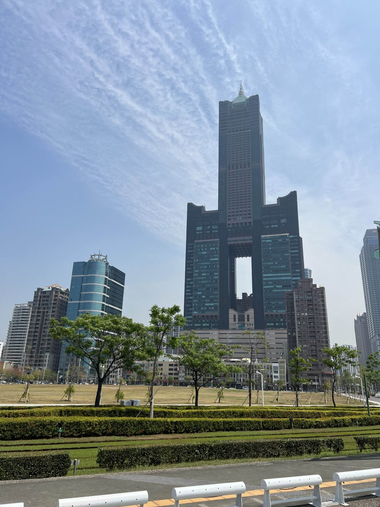
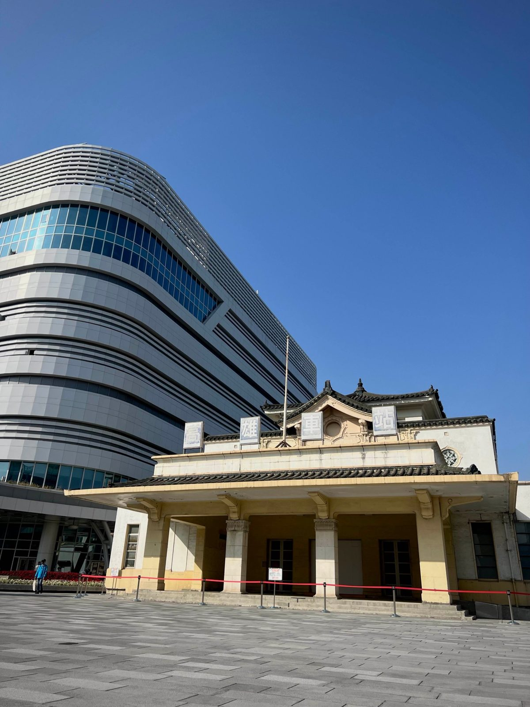
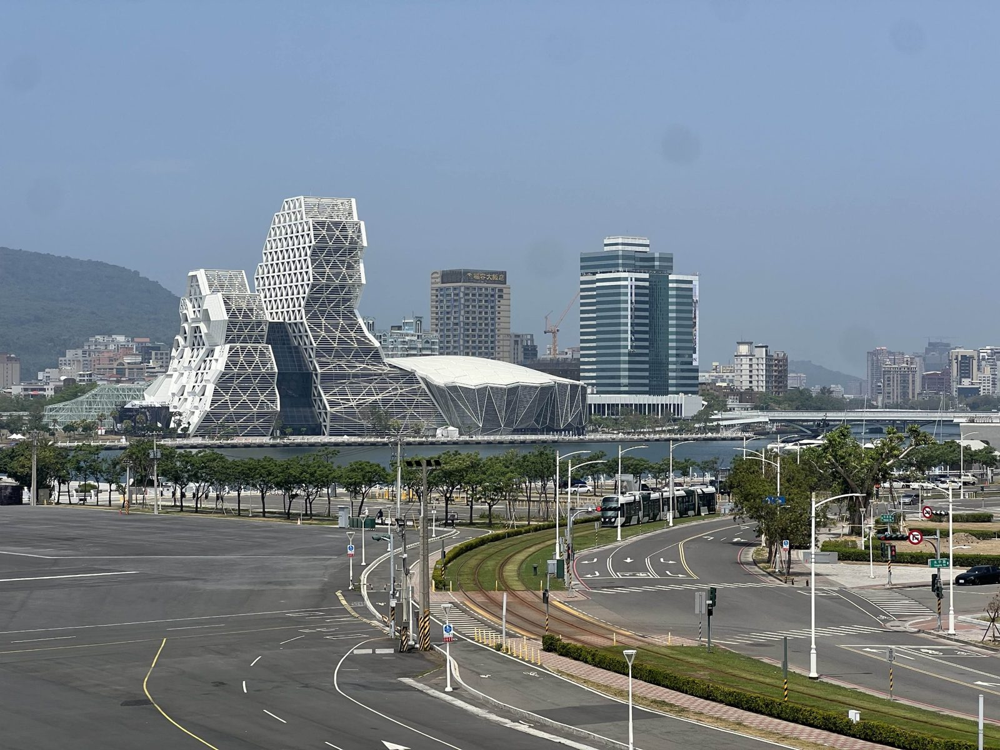

PLACES／場所檔案
場所檔案Places
場所檔案是補充閱讀，不必讀完全部才能繼續主敘事。自由黃昏市場、85 大樓、高雄車站與輕軌是觀察切面，不構成整座城市的代表樣本；這不是高雄的全史。
ziyou-market自由黃昏市場
策展任務
把「持續變化的市場」從抽象喜好轉成可追問的生活條件。
研究問題
- 哪些安排常調整、哪些不能任意動？
- 維修由誰提出與負擔？
- 如何看待新攤進入與既有習慣？
先問事實與經驗，再談價值。市場的實際邊界、出入口與可進入空間先現勘再定義，不把路邊店家一律歸入市場。
85-tower85 大樓
策展任務
作為「熟悉輪廓與內部生命是否同步」的提問節點。使用公開地點拍攝的輪廓與街道接近方式，不把城市象徵當全體居民共識。
本站不判定目前室內營運、空置比例、所有權、結構狀況或觀景設施開放情形。

kaohsiung-station高雄車站
策展任務
展示計畫、分期工程、日常使用與歷史物件如何交錯。
策展解釋
本展可以問「新舊如何同時被使用」，不先寫「已修復城市斷裂」。工程歷程逐筆列事件類型與文件，不把整個站區與單一標案視為同一完成日期。

light-rail輕軌
策展任務
將時間從建築生命延伸到身體移動、等待與可達性。
本展不是乘車指南；票價、班距、末班車等易變資訊不放進主敘事。不把高雄車站畫成輕軌直接停靠站，也不把所有選定場所畫成連續步行距離。
